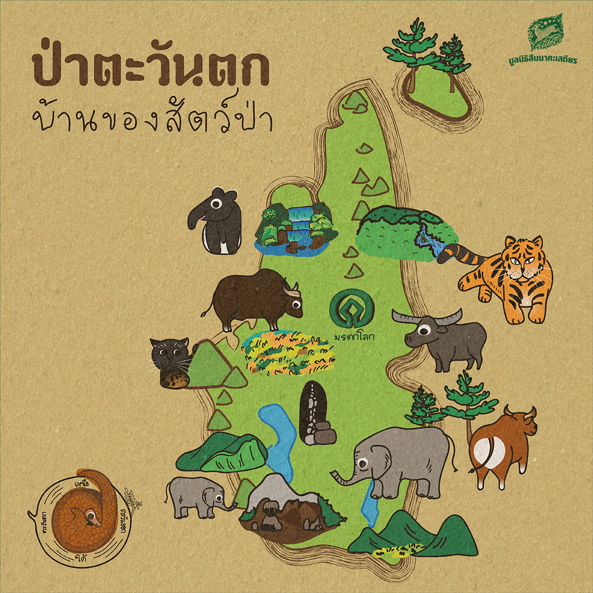
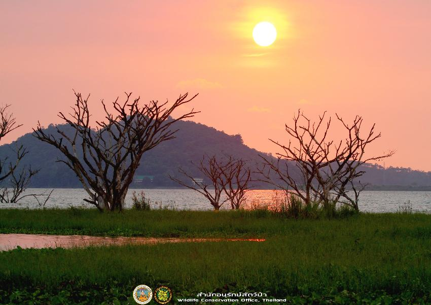
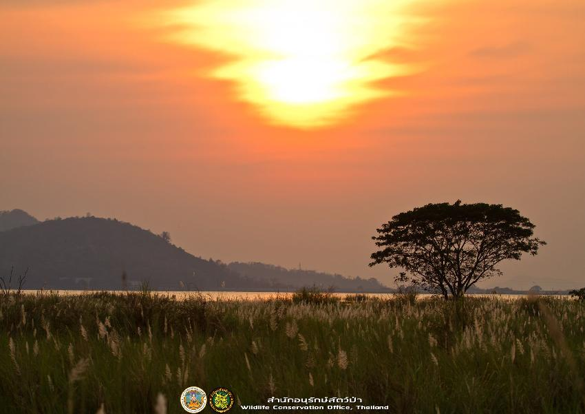

ยินดีต้อนรับสู่สวนสัตว์สุดมหัศจรรย์
สินค้า
ข้อมูลสัตว์
กิจกรรม
แผนที่สวนสัตว์
ประวัติผู้พัฒนา
ติดต่อเรา
สำรวจธรรมชาติและสัตว์ป่านานาชนิด!

ตั้งขึ้นในปี พ.ศ.2516 ที่บริเวณเขาลานวา นับเป็นศูนย์ศึกษาธรรมชาติและสัตว์ป่าแห่งแรกที่เปิดให้ประชาชนเข้าชมเป็นทางการเมื่อ เดือนมิถุนายน พ.ศ. 2517 ต่อมาเมื่อประมาณเดือน ธันวาคม พ.ศ.2555ได้ย้ายที่ทำการมาอยู่ ณ บริเวณขอบอ่างเก็บน้ำบางพระ เลขที่ 465 หมู่ 8 ตำบลบางพระ อำเภอศรีราชา จังหวัดชลบุรี เมื่อเดือนพฤษภาคม พ.ศ. 2556 เป็นหนึ่งในหน่วยงานที่ตั้งอยู่ใน พื้นที่เขตห้ามล่าสัตว์ป่าอ่างเก็บน้ำบางพระ ซึ่งมีเนื้อที่รับผิดชอบ ประมาณ 105 ไร่ ในปัจจุบันศูนย์ศึกษาธรรมชาติและสัตว์ป่าเขาเขียว สังกัดส่วนอนุรักษ์สัตว์ป่า สำนักบริหารพื้นที่อนุรักษ์ที่ 2 (ศรีราชา) กรมอุทยานแห่งชาติ สัตว์ป่า และพันธุ์พืช
 
ลักษณะภูมิประเทศ : เป็นพื้นที่ราบลุ่ม และเป็นพื้นที่ชุ่มน้ำบริเวณริมอ่างเก็บน้ำ ลักษณะภูมิอากาศ : มีลักษณะอากาศแบบมรสุมเขตร้อน แบ่งออกเป็น 3 ฤดู ได้แก่ ฤดูฝน ช่วงเดือนกรกฎาคมถึงเดือนตุลาคม ฤดูหนาว ช่วงเดือนพฤศจิกายนถึงเดือนกุมภาพันธ์ และฤดูร้อน ช่วงเดือนมีนาคมถึงเดือนมิถุนายน ทรัพยากรป่าไม้ สภาพเป็นสวนป่าที่ปลูกขึ้นมาใหม่ ส่วนใหญ่เป็นพันธุ์ไม้ที่จัดอยู่ในกลุ่มป่าเบญจพรรณ ประกอบด้วยพันธุ์ไม้ชนิดต่าง ๆ ได้แก่ ประดู่ป่า ตะขบ แดง มะค่าโมง สัก ยางนา โมกมัน ข่อย หว้า มะค่าแต้ เป็นต้น นอกจากนี้พื้นที่บริเวณชายน้ำยังเป็นป่าชุ่มน้ำที่ประกอบไปด้วยพันธุ์ไม้จำพวกหญ้าชนิดต่าง ๆ ไมยราบยักษ์ แขม สาบเสือ และผักบุ้ง เป็นต้น
วิดีโอแนะนำสวนสัตว์